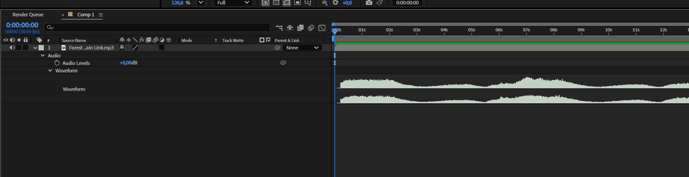
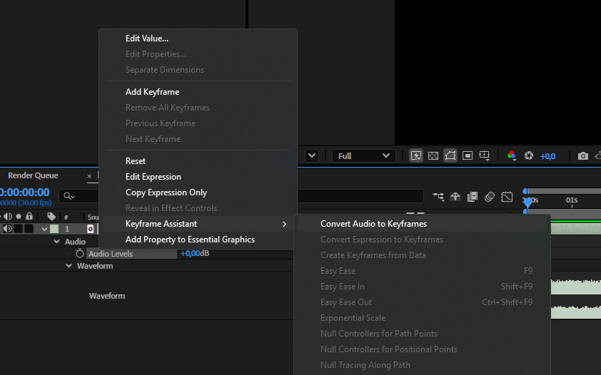

Звук в моушн-дизайне
Посмотрите один и тот же фрагмент с выключенным и включённым звуком. Обратите внимание, когда вы замечаете смену масштаба, какие движения кажутся тяжёлыми и где ждёте склейку. Эти различия помогают понять, зачем нужен каждый слой дорожки.
В Bounce Collaboration 2022 можно сравнить, как разные аниматоры ставят отскок и как звуковая дорожка связывает их фрагменты. Найдите два соседних эпизода, где контакт приходится на похожий момент, но ощущение материала различается. Разбор звука проекта на Behance.
Из чего складывается звуковая сцена
У звуковой дорожки есть несколько функций. Голос или реплика несут смысл. Музыка задаёт форму и ожидание. Шумы действий объясняют, что происходит с предметом. Атмосфера удерживает ощущение места. Акценты помогают заметить событие, например появление названия или контакт двух форм. Эти роли могут переходить от одного звука к другому: щелчок механизма способен стать частью музыкального рисунка.
Попробуйте сначала собрать дорожку из трёх элементов: тихий фон, один звук действия и один акцент. Отключайте дорожки по очереди. Если из-за отключения щелчка пропала ясность действия, этот щелчок несёт смысл. Если с отключением фона склейка стала заметной, фон связывал планы.
Вес, материал и характер
В звуке падения удобно выделить три части. Представьте, что металлическая крышка падает на деревянный стол.
- Attack — начало звука, когда он набирает громкость. У крышки это короткий щелчок при первом касании стола. У мягкого предмета начало может быть менее резким. В монтаже именно начало атаки удобно совместить с кадром контакта.
- Body — основная слышимая часть удара сразу после атаки. У крышки это металлический звон вместе с более глухим откликом столешницы. По этой части мы во многом распознаём материал и воспринимаем вес.
- Tail — затухание после основной части. У крышки ещё чуть слышен звон, а в пустой комнате к нему добавляются отражения звука от стен. Так хвост может подсказать и свойства предмета, и характер помещения.
Посмотрите на форму волны. У резкого удара начало обычно видно как быстрый подъём, дальше идёт участок основного звучания, а затем колебания постепенно уменьшаются. Границы между частями могут быть плавными. Для лёгкой пластиковой детали попробуйте короткий сухой щелчок. Для тяжёлого предмета добавьте более низкий отклик и, если подходит материалу, короткий дребезг. Сравнивайте варианты примерно на одинаковой воспринимаемой громкости.
Для фоли запишите несколько вариантов одного движения. Молния, бумага, ткань и деревянная коробка дают богатый набор звуков для абстрактной графики. Записывайте несколько дублей на одинаковом расстоянии, затем подбирайте звук к жесту. Источник записи может отличаться от материала в кадре, если получившийся звук убедителен.
Тайминг, акценты и тишина
Размечайте несколько опорных событий, а затем выбирайте, какие стоит озвучить. Щелчок обычно ставят на контакт или очень близко к нему. Свист движения может начинаться раньше, чтобы подготовить зрителя. Затухание после склейки может связать два плана. Откройте форму волны, найдите начало атаки и попадите именно им в нужный кадр. При 25 fps два кадра занимают 80 мс, этого уже достаточно для ощутимого сдвига короткого щелчка.
Разметьте музыкальную фразу целиком. Главный акцент может совпадать с переходом, а движение между акцентами продолжаться в своём ритме. Оставляйте паузы, чтобы зритель прочитал текст. Короткое снижение музыки перед появлением названия иногда выделяет момент лучше, чем ещё один удар. Если звук следующей сцены входит до склейки, он заранее вводит новое пространство. Если старый звук остаётся после неё, он помогает удержать связь с предыдущим кадром.
Пространство и звуковая перспектива
Сравните два способа озвучить один и тот же жест. Для близкого плана используйте сухой звук с отчётливой атакой. Для дальнего уменьшите громкость, смягчите верхние частоты и подмешайте окружение. Количество реверберации зависит от места: открытая площадка и пустой коридор дают разные хвосты.
Панорама может поддержать движение слева направо, особенно в наушниках. Проверьте запись в моно и на небольшом динамике. Если смысл исчезает из-за панорамы или потому, что главный удар держится только на глубоком басе, добавьте среднечастотную деталь. Для анимированной камеры сравните перспективу звука до и после смены плана.
Музыка, голос и айдентика
В брендовой заставке звук может повторять характер движения. Мягкое раскрытие допускает постепенный вход звука, резкая сборка знака может работать с сухим коротким акцентом. Для серии роликов полезно держать общий мотив и менять длину, насыщенность и плотность под носитель. Проверьте, как он звучит рядом с репликой, уведомлением и музыкой.
Если есть голос, дайте ему место в миксе. Сначала настройте уровень реплики, затем подложите музыку и уменьшите её в местах важных слов. Сравните результат на обычной громкости. Для демо и публикации сохраняйте сведения о лицензиях музыки и эффектов вместе с проектом.
Где брать звуки и музыку
Пишите поисковый запрос как короткое описание действия. Для крышки, которая закрывается на крупном плане, ищите metal latch click close dry. Для быстрой склейки начните с short air whoosh. Для пустого кабинета можно искать office room tone no voices. Сначала найдите подходящий материал, затем уточняйте близость, длину и характер. В большой библиотеке запрос impact даст слишком много разных результатов.
- Freesound. Удобен для отдельных полевых записей и фоли. Слушайте несколько вариантов и проверяйте лицензию конкретного файла. Если она требует указать автора, сохраните имя, ссылку и условия сразу при загрузке. Условия Freesound.
- Sonniss Game Audio GDC. Подборка библиотек для эффектов. Полезно сравнивать несколько звуков одного типа, например удары по металлу, ткань и механические переключатели. Для выбранного файла сверяйте условия его комплекта. Архив Sonniss.
- Собственная запись. Для бумажной анимации можно записать лист, картон и конверт. Сделайте несколько дублей с разной силой. Отдельно запишите несколько секунд помещения, чтобы заполнять паузы между склейками записи.
- Mixkit и фонотека YouTube Studio. Подходят для поиска музыки по настроению и жанру. У Mixkit условия различаются по типу материалов. В фонотеке YouTube проверяйте, требует ли выбранная композиция указания автора. Условия Mixkit · Фонотека YouTube.
Если подбираете музыку, сравнивайте фразы и места смены плотности. Хороший конец музыкальной фразы даёт удобную точку для появления логотипа. Если нужен голос, попробуйте инструментальную версию или отдельные музыкальные дорожки. Перед публикацией проверьте, покрывает ли лицензия нужную площадку и способ использования.
Как собирать и обрабатывать дорожку
- Разметьте видео. Поставьте маркеры на касания, появление заголовка и склейки. Для каждого решите, какой звук там нужен: подготовка, контакт, затухание или пауза.
- Отберите короткие фрагменты. Найдите начало атаки по волне и обрежьте лишний шум до неё. На границах добавьте короткие фейды, если слышны щелчки от монтажа. На атмосферных дорожках используйте более длинное перекрытие между дублями.
- Распределите звуки по дорожкам. Оставьте голос, музыку, действия и атмосферу отдельно. Так можно уменьшить музыку под репликой, сохранив звук действия.
- Соберите событие из слоёв. Например, при закрытии тяжёлой коробки сухой щелчок обозначает контакт, короткий низкий удар добавляет массу, а шорох картона сообщает материал. По очереди включите каждый слой. Подгоните их начало и уровень так, чтобы они воспринимались как одно действие.
- Настройте обработку по задаче. EQ помогает убрать гул и освободить место для речи. Компрессор регулирует перепады уровня, когда тихие фразы трудно разобрать между громкими. Реверберацию добавьте, если надо связать звук с помещением. Сравнивайте обработанный и исходный варианты при близкой громкости.
- Послушайте на разных устройствах. Проверьте наушники, динамик телефона и моно. Убедитесь, что музыка не заглушает речь и важные события остаются различимы.
Для нескольких дорожек удобны монтажная программа с микшером или отдельная звуковая среда. Например, можно экспортировать черновой ролик из AE, свести звук в Audition или REAPER и вернуть микс в композицию с той же начальной точкой. Для обмена пригодится WAV. В проекте оставьте отдельные дорожки и финальный микс, чтобы при правке изображения можно было сдвинуть отдельный акцент. Adobe Audition · REAPER.
Как работать со звуком в After Effects
Импортируйте аудиофайл, положите его в композицию и откройте Audio Waveform. Отметьте маркерами контакты, музыкальные фразы и паузы. Для громкости используйте Audio Levels. При сведении нескольких источников следите за суммарными пиками. Для работы со сложной дорожкой удобно сохранить видео-референс, собрать звук в монтажной программе или DAW и вернуть в AE готовый микс для проверки.

Если нужно привязать графику к амплитуде, выберите слой и примените Animation → Keyframe Assistant → Convert Audio to Keyframes. На слое Audio Amplitude появятся ключи. Попробуйте связать их с небольшим изменением размера или яркости. Сначала посмотрите диапазон сигнала, затем перенесите значения в безопасный диапазон параметра. Без ограничения мелкие пики могут заставить всю сцену дёргаться.

Audio Spectrum визуализирует частотный спектр, Audio Waveform показывает форму сигнала. Если нужно, чтобы объект реагировал только на бас, предварительно подготовьте отдельную полосу аудио или проанализируйте её в подходящем инструменте. Основные драматургические акценты всё равно удобно ставить вручную. Автоматическая реакция хорошо работает как дополнительный слой движения.
Преобразование звука в ключи в справке Adobe · Audio Spectrum и Audio Waveform.
Монтажная проба и экспорт
Возьмите один короткий ролик с появлением и остановкой объекта. Соберите три звуковые версии. Первая подчёркивает лёгкость сухим касанием. Во второй добавьте низкий удар и короткий дребезг. В третьей оставьте тихую атмосферу и один звук на финале. Проиграйте версии подряд на одинаковом уровне. Отметьте, где поменялось ощущение массы и где зритель раньше заметил конец движения.
Для финальной сборки сохраните голос, музыку, шумы и атмосферу отдельно, если предполагаются правки или адаптации. В экспортированном файле проверьте начало и конец, попадание акцентов после перекодирования, разборчивость речи и воспроизведение на телефоне. Целевой уровень громкости сверяйте с требованиями конкретной площадки или проекта. Проверьте также версию без звука, если работа будет автоматически запускаться в ленте, и добавьте субтитры там, где голос сообщает важную информацию.